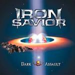

|
|
||
Iron Savior : Dark Assault (2001) |
|

http://www.iron-savior.com |
1. Never Say Die 5:32 |
6.5/10 |
|
Dark Assault es el tercer asalto de la banda de Piet Sielck, Iron Savior. Este disco continúa la historia de los dos primeros discos donde el Iron Savior, una poderosa máquina pensante construida por los habitantes de Atlantis en el pasado para su defensa, despierta en el presenta e identifica erróneamente a la humanidad como el enemigo con lo que, consecuentemente, ataca. La humanida se defiende, pero no es hasta la aparición de los herederos de Atlantis que llegan del espacio (los Calderanos) que el Iron Savior no puede ser derrotado y puesto en fuga. Este tercer disco narra la aparición de la Sombra, una agresiva especie que se dedica a viajar entre universos devastándolos a su paso. La humanidad y los Calderanos de nuevo tienen que luchar juntos. Mientras tanto el derrotado Iron Savior trata de poner orden en su confusa mente... Este disco continúa en la línea de la banda, pero lo encuentro menos interesante que el anterior, Unification. La voz de Piet sigue como siempre, clara y poderosa y las contribuciones de Kai Hansen siguen siendo de lo mejor del album. La producción es muy buena, no olvidemos que Piet fue cocinero antes que fraile, perdón, productor e ingeniero de sonido antes que líder de un grupo de metal, y por supuesto las letras siguen igual de elaboradas que siempre. Pero los riffs son algo repetitivos, la voz no tiene, nunca lo ha tenido, un gran rango, lo que tampoco ayuda a aportar variedad y al final el disco se hace algo aburrido. Tampoco me gusta el libreto con las letras. Los dibujos son repetitivos y resultan muy poco originales y nada trabajados. En el anterior al menos la portada tenía un cierto aire de ciencia ficción de los 50 o los 60 que la hacía bastante interesante. El disco comienza bien. "Never Say Die" comienza con una introducción musical que crea ambiente y que gana en fuerza y velocidad progresivamente. El doble bombo y la potente y grave voz de Piet contribuyen a crear una canción potente, y aunque le falta un momento memorable para ser una gran canción, el solo de guitarra que comparten Piet y Kai Hansen hacia el final casi lo es. "Seek and Destroy" sigue en la misma línea. Doble bombo, la voz igual de potente y un estribillo a coro que no está mal. "Solar Wings" es mi canción favorita. Compuesta a medias y cantada por Kai Hansen, recuerda mucho al "No World Order" (último disco de Gamma Ray, la banda de Kai). El estribillo es pegadizo y el solo de guitarra que se marca el señor Hansen memorable. Tanto "I've Been to Hell", como "Dragons Rising" son dos canciones del montón, que a mi no me han terminado de llegar, seguramente porque no tienen un gran momento, algún cambio de ritmo o algo que se destaque. En "Predators" cantan ambos, Piet y Kai. El efecto está bien y le aporta variedad al album y estilo a la canción. "Made of Metal" es más lenta y aparecen más los teclados, pero el ritmo es machacón y la canción no termina de destacar. Lo mejor de esta pista es la parte instrumental que aparece hacia la mitad de la canción, que es bastante original y elaborada. "Firing the Guns" es otra de esas que suena todo el rato igual, salvo el estribillo que sin ser especialmente bueno al menos es diferente. "Eye of the World" no está mal. La base es la misma que en el resto del album, doble bombo y guitarras oscuras. Pero en esta la voz de Piet destaca más y los coros le aportan mayor definición. También tiene más cambios de ritmo con lo que consigue mantener la atención del oyente. "Back Into the Light" comienza con una guitarra "galopante" al más puro estilo Iron Maiden, que se mantiene luego como el riff base durante toda la canción. La canción tiene varios cambios de ritmo, y no está mal, pero nada más que eso. El solo de guitarra compartido entre Kai y Piet también se pude destacar. En "After the War" cantan a medias Jan Eckert, el bajista, y Piet. La canción es lenta y pesada y se hace un auténtico tostón. El disco lo cierra una versión de "Delivering the Goods" de Judas Priest. Oyendo esta canción uno imagina de donde vienen parte de las influencias musicales de Piet Sielck. |
||
Rubén Béjar |
||